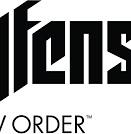

Conversation 1078
Wolfenstein: Youngblood
Prompt 1 · You
wolfenstein old blood but the other one
Response 1 · Google AI Mode
You are likely thinking of Wolfenstein: Youngblood, which is the other standalone, subtitle-only release in the modern MachineGames era.  Reddit +1
Reddit +1
Reddit +1While The Old Blood is a single-player prequel set in 1946, Youngblood is a co-op-focused sequel set in the 1980s starring BJ Blazkowicz's twin daughters.  Wikipedia +1
Wikipedia +1
Wikipedia +1Alternatively, depending on what context you meant by "the other one," you might be thinking of:

Wolfenstein: The New Order: The main 2014 game that The Old Blood was a direct standalone expansion for.

Which of these "other ones" were you looking for? If you want, I can give you the story summary, gameplay differences, or the complete playing order for the series.
Source links preserved from this response
- www.reddit.com
https://www.reddit.com/r/Wolfenstein/comments/kaotd4/is_wolfenstein_old_blood_new_order_and_new/ - en.wikipedia.org
https://en.wikipedia.org/wiki/Wolfenstein:_The_Old_Blood - steamcommunity.com
https://steamcommunity.com/app/350080/discussions/0/1471967615855576405/